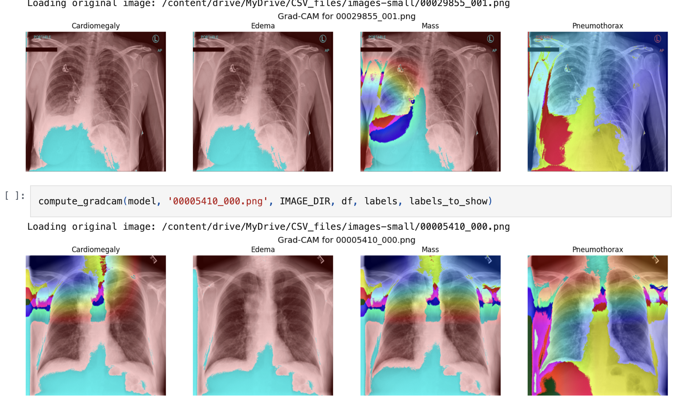
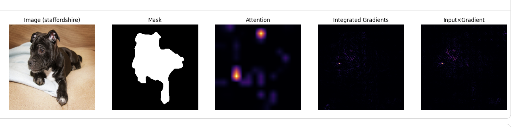
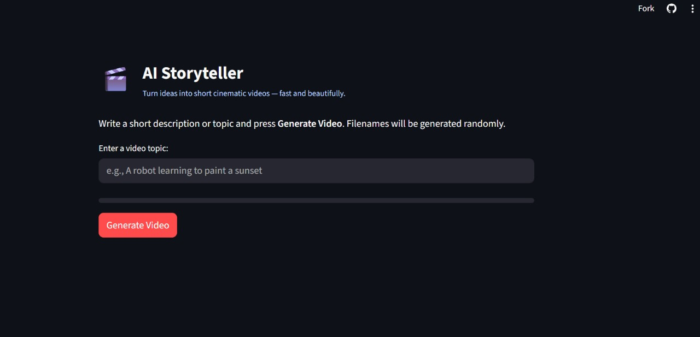
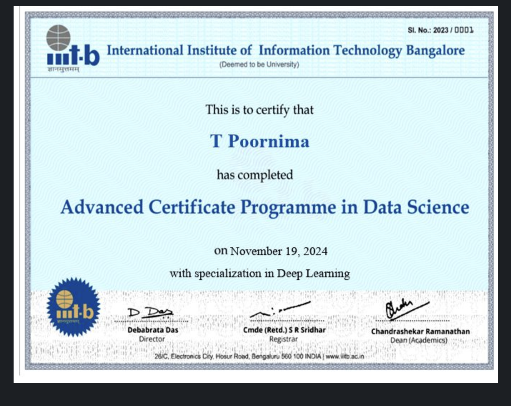

As my journey into Applied Machine Intelligence progressed, I realized that the true strength of AI comes from a blend of mathematics, data skills, algorithms, and practical implementation. To build this foundation, I followed a structured path of learning and experimentation.
I began by strengthening my fundamentals in mathematics for AI and ML, then moved into mastering the data lifecycle—learning how to collect, clean, and process data, engineer meaningful features, and uncover insights through exploratory data analysis. I also explored the art of data visualization using tools and libraries like Pandas, NumPy, Matplotlib, and Seaborn, which allowed me to communicate insights effectively.
From there, I immersed myself in machine learning algorithms, starting with classical models such as linear / logistic regression, decision trees, SVMs, KNN, and Naive Bayes.
My curiosity naturally led me into deep learning, where I built and experimented with CNNs and LSTMs, explored GANs, and worked on transformer-based architectures. I practiced extensively with libraries like TensorFlow, PyTorch, and Keras, turning theory into working prototypes.
My journey into Applied Machine Intelligence began with a fascination for how machines can learn from data and solve problems once thought to be uniquely human. Over time, this curiosity transformed into a structured path of learning and experimentation—starting from the fundamentals of Artificial Intelligence and Machine Learning, and steadily advancing into Deep Learning, Large Language Models, and Agentic AI systems.
What excites me most is applying these skills to create meaningful solutions—whether it’s building predictive systems, enhancing automation, or developing intelligent agents that can reason and adapt. With a strong mix of analytical problem-solving, coding expertise, and applied research, I am ready to bring this journey forward into an internship role, where I can contribute to cutting-edge AI projects while continuing to grow as a practitioner.
The tools and technologies I use to build intelligent systems.
Scikit-learn, Computer Vision, Deep Learning, LLMs, Gen AI, PyTorch, TensorFlow.
Python, SQL, Matplotlib, Seaborn, Excel (Advanced), Laravel, API Integration, Database Management
JavaScript, HTML, CSS, PHP, Git, GitHub
Statistical Analysis, Geospatial Analysis, Data Visualization, Academic Writing, JIRA, SharePoint
ServiceNow Northeastern University | Aug 2025 - Present
Develop and implement ServiceNow modules to streamline IT service management processes. I collaborate with cross-functional teams to gather requirements, customize workflows, and enhance system functionality to improve user experience and operational efficiency.
Mosh E-com Services Pvt Ltd | Nov 2023 - Oct 2024
Architected end-to-end web applications using Laravel, achieving 99.7% uptime. Developed scalable backend APIs and data-driven frontends for a high-traffic e-commerce platform. Spearheaded the creation of machine learning-ready data pipelines by cleaning and structuring customer logs for future AI model deployment.
JobShop.ai | Nov 2022 - Nov 2023
Engineered responsive web interfaces using HTML, CSS, and JavaScript, boosting site performance by 31%. Designed and implemented interactive analytics dashboards with SQL and CRM integration to track user engagement, lead conversions, and campaign ROI in real-time.
Applied machine learning and development skills to solve complex problems.

Engineered a deep learning CNN to detect 14 pathologies in chest X-ray images using computer vision and multi-label classification. Implemented a complete end-to-end medical imaging pipeline to provide automated diagnostic assistance.
View Code
Implemented a Computer Vision model (ViT-B/16) and applied explainable AI techniques (Attention Maps, Integrated Gradients, Input × Gradient) to evaluate model interpretability and visualize feature attributions.
View Code
AI Storyteller is a creative tool that transforms written ideas into short cinematic-style videos within seconds. Users simply provide a topic or description, and the system generates visually engaging videos with randomly assigned filenames for uniqueness.
View CodeCo-authored a research paper exploring IoT applications for infrastructure improvement and societal impact. This work was presented at the IEEE TEMSMET 2023 conference.
As a Research Assistant, I contributed to a user research study evaluating digital health tools. I provided systematic feedback on interface usability to support patient-centered technology development.

I am actively seeking opportunities in Machine Learning and AI. If you're looking for a passionate problem-solver with a unique blend of development and data skills, let's connect.